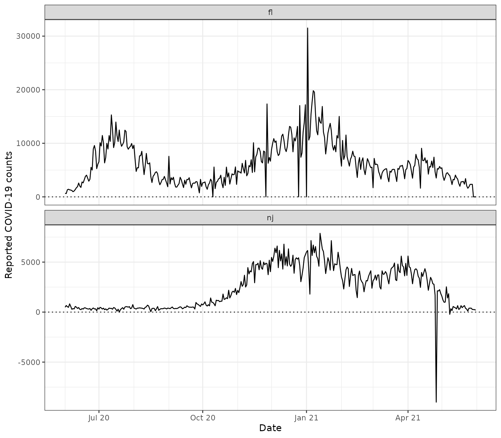
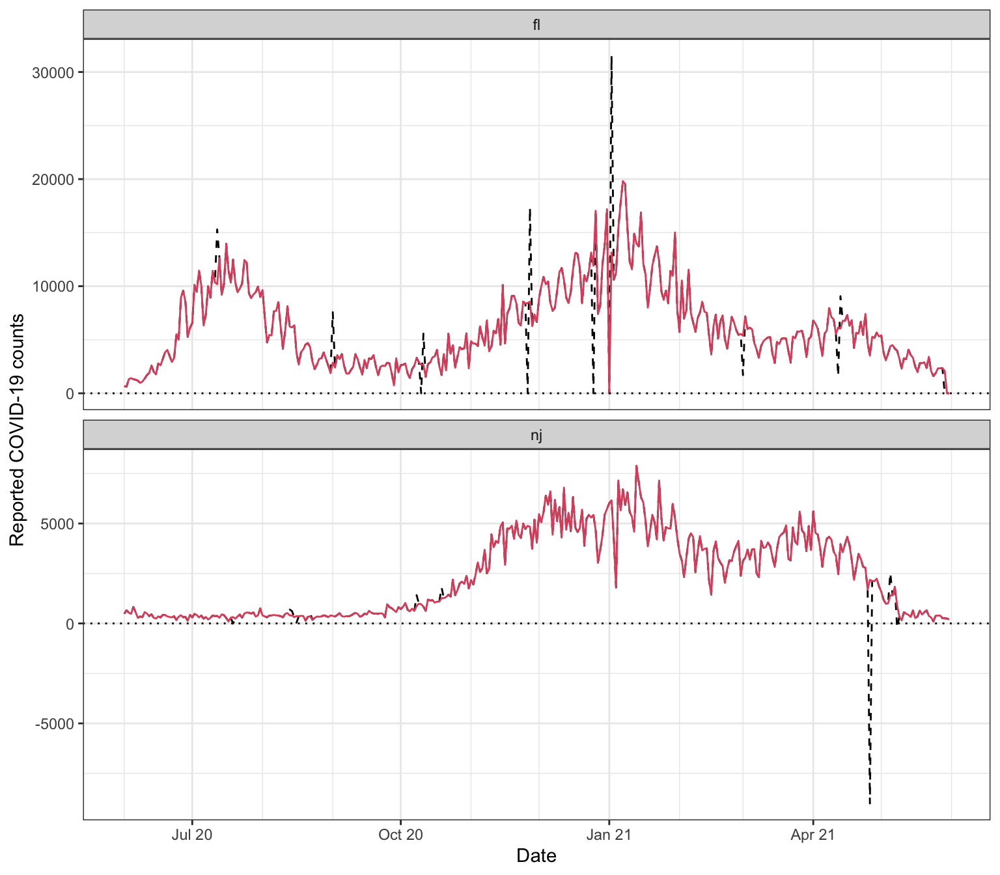
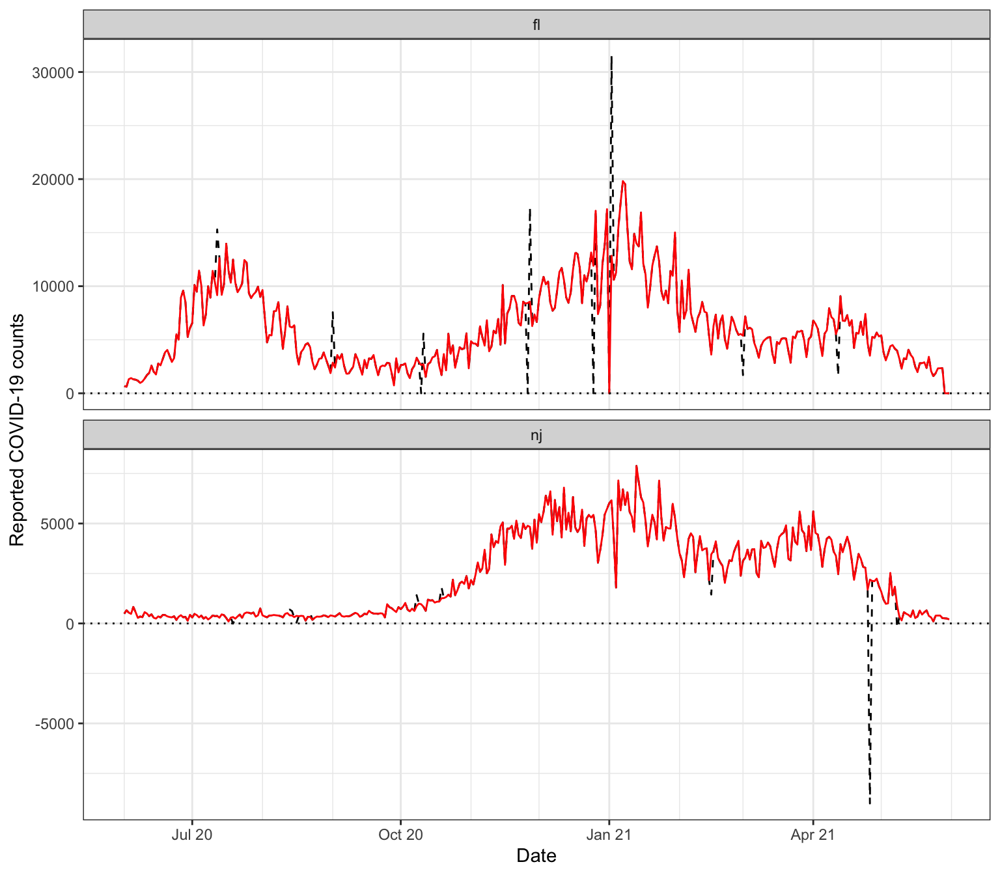

This vignette describes functionality for detecting and correcting outliers in signals in the epi_detect_outlr() function provided in the epiprocess package. This is designed to be modular and extendable, so that you can provide your own outlier detection and correction functions and use them with epi_df objects. We’ll work with state-level daily reported COVID-19 case counts from Florida and New Jersey.
library(covidcast) library(epiprocess) library(dplyr) library(tidyr) library(ggplot2) theme_set(theme_bw()) x <- covidcast_signal(data_source = "jhu-csse", signal = "confirmed_incidence_num", start_day = "2020-06-01", end_day = "2021-05-31", geo_type = "state", geo_values = c("fl", "nj"), as_of = "2021-10-28") %>% select(geo_value, time_value, cases = value) %>% as_epi_df() ggplot(x, aes(x = time_value, y = cases)) + geom_line() + geom_hline(yintercept = 0, linetype = 3) + facet_wrap(vars(geo_value), scales = "free_y", ncol = 1) + scale_x_date(minor_breaks = "month", date_labels = "%b %y") + labs(x = "Date", y = "Reported COVID-19 counts")

There are multiple outliers in these data that a modeler may want to detect and correct. We’ll discuss those two tasks in turn.
Outlier detection
The epi_detect_outlr() function allows us to run multiple outlier detection methods, and then (optionally) combine the results from those methods. Here, we’ll investigate outlier detection results from each of following methods.
- Detection based on a rolling median, using
epi_detect_outlr_rm(), which computes a rolling median on with a default window size of 21 time points centered at the time point under consideration, and then computes thresholds based on a multiplier times a rolling IQR computed on the residuals. - Detection based on a seasonal-trend decomposition using LOESS (STL), using
epi_detect_outlr_stl(), which is similar to the rolling median method but replaces the rolling median with fitted values from STL. - Detection based on an STL decomposition, but without seasonality term, which amounts to smoothing using LOESS.
The outlier detection methods are specified using a tibble that is passed to epi_detect_outlr(), with one row per method, and whose columms specify the outlier detection function, any input arguments (only nondefault values need to be supplied), and an abbreviated name for the method used in tracking results. Abbreviations “rm” and “stl” can be used for the built-in detection functions epi_detect_outlr_rm() and epi_detect_outlr_stl(), respectively.
detection_methods = bind_rows( tibble(method = "rm", args = list(list(detect_negatives = TRUE, detection_multiplier = 2.5)), abbr = "rm"), tibble(method = "stl", args = list(list(detect_negatives = TRUE, detection_multiplier = 2.5)), abbr = "stl_seasonal"), tibble(method = "stl", args = list(list(detect_negatives = TRUE, detection_multiplier = 2.5, seasonal_period = NULL)), abbr = "stl_nonseasonal")) detection_methods
## # A tibble: 3 × 3
## method args abbr
## <chr> <list> <chr>
## 1 rm <named list [2]> rm
## 2 stl <named list [2]> stl_seasonal
## 3 stl <named list [3]> stl_nonseasonalAdditionally, we’ll form combined lower and upper thresholds, calculated as the median of the lower and upper thresholds from the methods at each time point. Note that using this combined median threshold is equivalent to using a majority vote across the base methods to determine whether a value is an outlier.
x <- x %>% group_by(geo_value) %>% epi_detect_outlr( var = cases, methods = detection_methods, combiner = "median", new_col_name = "outlier_info")
We can see that x has now been updated to include a new column outlier_info with information about the detection thresholds and possible replacement values from each method.
head(x)
## # A tibble: 6 × 4
## geo_value time_value cases outlier_info
## <chr> <date> <dbl> <list>
## 1 fl 2020-06-01 667 <tibble [1 × 12]>
## 2 fl 2020-06-02 617 <tibble [1 × 12]>
## 3 fl 2020-06-03 1317 <tibble [1 × 12]>
## 4 fl 2020-06-04 1419 <tibble [1 × 12]>
## 5 fl 2020-06-05 1305 <tibble [1 × 12]>
## 6 fl 2020-06-06 1270 <tibble [1 × 12]>## # A tibble: 6 × 15
## geo_value time_value cases rm_lower rm_upper rm_replacement stl_seasonal_lower
## <chr> <date> <dbl> <dbl> <dbl> <dbl> <dbl>
## 1 fl 2020-06-01 667 345 2195 667 10.5
## 2 fl 2020-06-02 617 406. 2169. 617 201.
## 3 fl 2020-06-03 1317 468. 2142. 1317 90.5
## 4 fl 2020-06-04 1419 564. 2058. 1419 269.
## 5 fl 2020-06-05 1305 362 2272 1305 329.
## 6 fl 2020-06-06 1270 380. 2308. 1270 261.
## # … with 8 more variables: stl_seasonal_upper <dbl>,
## # stl_seasonal_replacement <dbl>, stl_nonseasonal_lower <dbl>,
## # stl_nonseasonal_upper <dbl>, stl_nonseasonal_replacement <dbl>,
## # combined_lower <dbl>, combined_upper <dbl>, combined_replacement <dbl>To visualize the results, we first define a convenience function for plotting.
# Plot outlier detection bands and/or points identified as outliers plot_outliers = function(x, var, outliers_col = outlier_info, bands = FALSE, points = TRUE, combined_only = TRUE, facet_vars = vars(geo_value), nrow = NULL, ncol = NULL, scales = "fixed") { var <- rlang::enquo(var) outliers_col <- rlang::enquo(outliers_col) # Convert outlier detection results to long format x_long <- x %>% unnest(!!outliers_col) %>% pivot_longer( cols = x %>% pull(!!outliers_col) %>% `[[`(1) %>% colnames(), names_to = c("method", ".value"), names_pattern = "(.+)_(.+)") # If requested, filter to only combined method if (combined_only) x_long <- x_long %>% filter(method == "combined") # Start of plot with observed data p <- ggplot() + geom_line(data = x, mapping = aes(x = time_value, y = !!var)) # If requested, add bands if (bands) p <- p + geom_ribbon(data = x_long, aes(x = time_value, ymin = lower, ymax = upper, color = method), fill = NA) # If requested, add points if (points) { x_detected <- x_long %>% filter((!!var < lower) | (!!var > upper)) p <- p + geom_point(data = x_detected, aes(x = time_value, y = !!var, color = method, shape = method)) } # If requested, add faceting if (!is.null(facet_vars)) p <- p + facet_wrap(facet_vars, nrow = nrow, ncol = ncol, scales = scales) return(p) }
Now we produce plots for each state at a time, faceting by the detection method.
plot_outliers(x %>% filter(geo_value == "fl"), cases, bands = TRUE, combined_only = FALSE, facet_vars = vars(method), scales = "free_y", ncol = 1) + scale_x_date(minor_breaks = "month", date_labels = "%b %y") + labs(x = "Date", y = "Reported COVID-19 counts")

plot_outliers(x %>% filter(geo_value == "nj"), cases, bands = TRUE, combined_only = FALSE, facet_vars = vars(method), scales = "free_y", ncol = 1) + scale_x_date(minor_breaks = "month", date_labels = "%b %y") + labs(x = "Date", y = "Reported COVID-19 counts")

Outlier correction
Finally, in order to correct outliers, we can use the posited replacement values returned by each outlier detection method. Below we use the replacement value from the combined method, which is defined by the median of replacement values from the base methods at each time point.
y <- x %>% unnest(outlier_info) %>% mutate(cases_corrected = combined_replacement) %>% select(geo_value, time_value, cases, cases_corrected) y %>% filter(cases != cases_corrected)
## # A tibble: 20 × 4
## # Groups: geo_value [2]
## geo_value time_value cases cases_corrected
## <chr> <date> <dbl> <dbl>
## 1 fl 2020-07-12 15300 9165.
## 2 fl 2020-09-01 7569 2861.
## 3 fl 2020-10-10 0 2643.
## 4 fl 2020-10-11 5570 2699.
## 5 fl 2020-11-26 0 8435.
## 6 fl 2020-11-27 17344 8553.
## 7 fl 2020-12-25 0 11905.
## 8 fl 2021-01-02 31518 12849.
## 9 fl 2021-03-01 1700 5378.
## 10 fl 2021-04-12 1613 6157.
## 11 nj 2020-07-19 -8 320.
## 12 nj 2020-08-13 694 404.
## 13 nj 2020-08-14 619 397.
## 14 nj 2020-08-16 40 379.
## 15 nj 2020-08-22 555 329.
## 16 nj 2020-10-08 1415 873.
## 17 nj 2020-10-19 1807 1262.
## 18 nj 2021-02-15 1445 3454.
## 19 nj 2021-04-26 -9005 2193.
## 20 nj 2021-05-08 -221 904.ggplot(y, aes(x = time_value)) + geom_line(aes(y = cases), linetype = 2) + geom_line(aes(y = cases_corrected), col = "red") + geom_hline(yintercept = 0, linetype = 3) + facet_wrap(vars(geo_value), scales = "free_y", ncol = 1) + scale_x_date(minor_breaks = "month", date_labels = "%b %y") + labs(x = "Date", y = "Reported COVID-19 counts")

More advanced correction functionality will be coming at some point in the future.